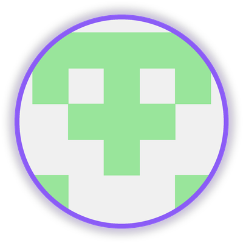
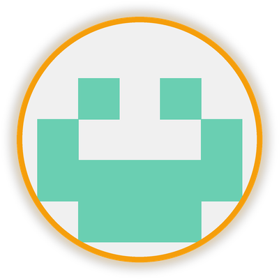
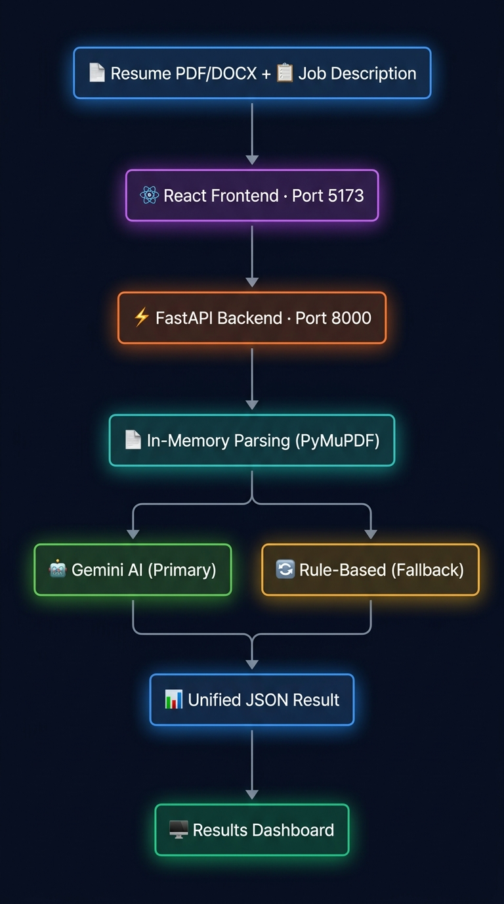
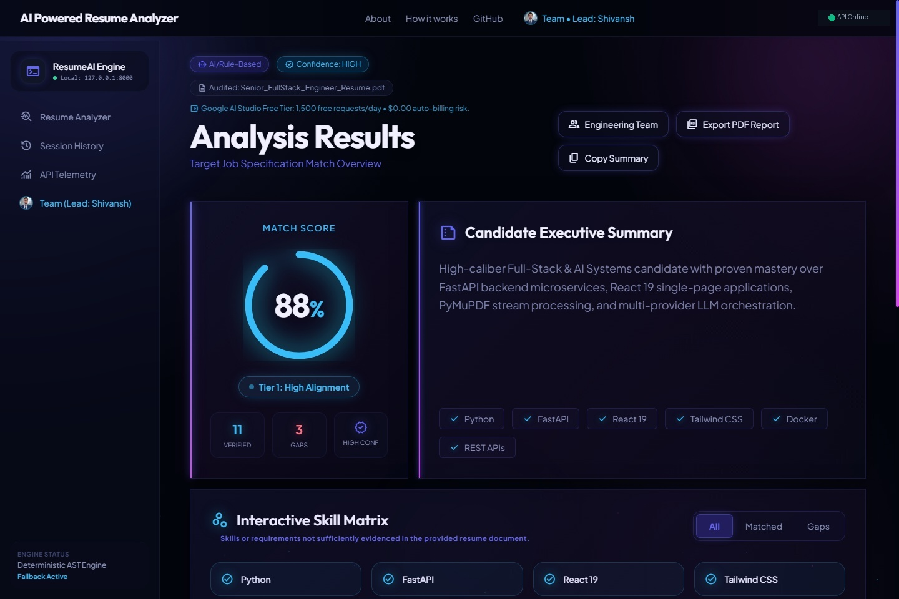
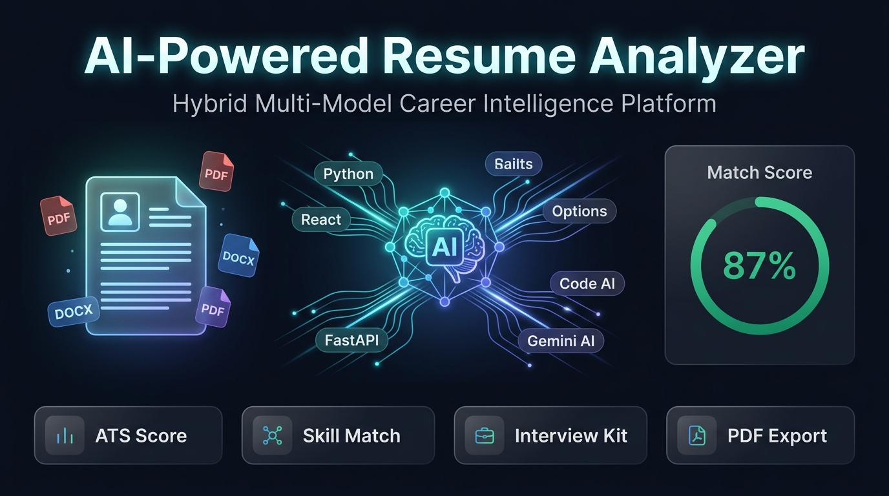

AI-Powered Resume Analyzer
Next-Generation ATS Scoring, Semantic Gap Analysis & Executive Reporting
🎓 B.Tech Computer Science Capstone
A production-ready web application providing real-time ATS scoring, explainable semantic skill gap analysis, and tailored bullet recommendations for students and job applicants.
👥 Project Team Members


Project TL;DR — Quick Executive Summary
The Problem, Our Solution, and the Quantified Impact
🛑 The Problem
- 75% Automated Rejection: Legacy keyword-based ATS silently discard qualified applicants.
- Zero Feedback: Job seekers receive automated rejection emails with zero explanation.
- Privacy Exploitation: Free online tools sell candidate contact data to third parties.
💡 Our Solution
- Semantic Understanding: Evaluates context and conceptual experience, not just strings.
- Actionable Gap Analysis: Displays matching, missing, and recommended technical skills.
- BYOK Privacy First: Users supply API keys; zero server-side storage of personal documents.
🚀 Key Outcomes
Team Composition & Roles
Four Specialized Engineering Pillars Driving Delivery
Shivansh Mishra
Lead & Architect
- FastAPI Microservices
- Multi-LLM BYOK Pipeline
- In-Memory Parsers (PDF/DOCX)
Harshvardhan Sisodiya
Frontend Architect
- React 19 + Vite 6 UI
- Glassmorphism Theme System
- Responsive Mobile & Desktop
Vishal Patel
QA & Security Lead
- 92 Automated Unit Tests
- Security MIME Validation
- Edge Case Boundary Defense
Sujeet Kannaujiya
Research & Docs Lead
- 10 Markdown Doc Guides
- OpenAPI Specifications
- Executive Report Design
Problem Statement & Motivation
Why Traditional Hiring Systems Fail Modern Job Seekers
⚠️ Industry Pain Points
- Keyword Matching is Obsolete: Legacy ATS uses basic string queries. Synonyms like 'FastAPI' vs 'REST Framework' cause immediate false rejections.
- The Feedback Void: 90% of applicants receive no actionable insights on missing skills, leading to repeated failed applications.
- Aggressive Monetization: Commercial tools charge $30–$50/month and restrict users to 2 or 3 scans before forcing subscriptions.
- Privacy Compromises: Unverified free websites harvest and sell student phone numbers and emails to recruiters.
🎯 Practical Campus Persona
Rahul has strong experience with Python, PyTorch, and Docker. He applies for a 'Backend Developer' job. The ATS rejects him because the JD required 'Containerization' and 'Web Services'.
Our Project Goal:
Give Rahul immediate semantic feedback: highlight that his Docker experience matches containerization, identify missing Git-flow keywords, and provide 1-click bullet point fixes.
Project Goals & Measurable Success Criteria
Defining Engineering Standards and Delivery Benchmarks
🎯 Must-Have Functional Goals (100% Shipped)
- Multi-Format File Parsing: In-memory extraction of both PDF and DOCX documents with spatial coordinate ordering.
- Explainable Semantic Scoring: Multi-dimensional score (0–100%) broken down by hard skills, soft skills, and experience match.
- Bring-Your-Own-Key (BYOK) Security: Client-side storage of user API keys (Gemini, OpenAI, Claude).
- Executive 2-Page PDF Export: Instant compilation of a professional, print-ready evaluation dossier.
📊 Non-Functional Engineering Benchmarks
- Sub-3 Second Execution: Complete end-to-end parsing, analysis, and rendering cycle under 3 seconds.
- Zero Server-Side Storage: Documents stream through volatile memory (`io.BytesIO`) and are purged immediately.
- 100% Automated Test Pass Rate: 92/92 automated pytest test cases validating happy and error paths.
- Responsive Device Support: 60 FPS performance and fluid layouts across 320px to 4K resolutions.
Solution Overview & System Data Flow
How Data Moves Securely from Document Upload to Actionable Dashboard
Client validates file type; FastAPI receives multipart payload in memory.
`pdfplumber` / `python-docx` extracts text with spatial sorting (`sort=True`).
Multi-LLM engine evaluates context at low temperature (0.2) against strict JSON schema.
React renders animated scores; ReportLab generates executive 2-page PDF.

Architecture & Technology Stack
Modern, Scalable, Enterprise-Grade Open Source Stack
| Layer | Technologies Used | Selection Rationale |
|---|---|---|
| Frontend | React 19, Vite 6, Tailwind CSS, Lucide Icons | Sub-350ms build time, zero runtime bloat, concurrent DOM rendering. |
| Backend | FastAPI (Python 3.10+), Uvicorn ASGI, Pydantic v2 | High asynchronous concurrency, automatic OpenAPI documentation, strict typing. |
| Parsing Engine | pdfplumber, python-docx, ReportLab | In-memory byte parsing, multi-column coordinate sorting, PDF dossier generation. |
| AI / LLM | Google Gemini 1.5/2.0 API, OpenAI GPT-4o, Anthropic Claude | Multi-provider BYOK flexibility, low latency, structured JSON mode. |
| QA & Testing | pytest, pytest-asyncio, HTTPX TestClient | 92 automated tests across unit, integration, and security edge cases. |
Backend Implementation & API Design
FastAPI Microservice with In-Memory Streaming & Pydantic Validation
⚙️ Core REST API Endpoints
POST /api/analyze: Accepts multipart form data (resume file + JD string + provider header). Returns structured analysis.POST /api/export-pdf: Takes analysis JSON and streams a compiled 2-page executive PDF report back.GET /api/health: Liveness & readiness probe for cloud monitoring and auto-healing.
🛡️ Defensive In-Memory Pipeline
- Zero disk I/O: Files processed as
io.BytesIOstreams. - Strict MIME enforcement: Blocks executables, scripts, and archives.
- Pydantic v2 enforcement: Guaranteed output structure.
💻 Clean Code Architecture
AI Integration & Multi-LLM Pipeline
Low-Temperature Analytical Prompts, Multi-Provider BYOK & Fallbacks
🤖 Multi-LLM BYOK
- Google Gemini 1.5/2.0: Default ultra-fast inference with massive context capacity.
- OpenAI GPT-4o: High-precision alternative for enterprise recruiters.
- Anthropic Claude 3.5: Exceptional nuanced reasoning for complex executive roles.
🎯 Prompt Engineering
- Temperature = 0.2: Forces analytical, deterministic output; minimizes creative hallucination.
- Strict JSON Schema: Enforces schema fields:
overall_score,matching_skills,missing_skills,recommendations. - Grounded Reasoning: LLM is explicitly barred from fabricating skills not present in the resume.
🛡️ 3-Layer Safeguards
- Regex Extraction: Automatically strips markdown backticks (
```json) from LLM output. - Schema Coercion: Auto-repairs minor type anomalies before returning to client.
- Deterministic Fallback: Keyword-frequency heuristics activate if external APIs hit rate limits.
Frontend Implementation & User Experience
Intuitive, Accessible React 19 UI with Real-Time Interactive Feedback
✨ Core UI/UX Highlights
- Fluid Drag & Drop: Native file dropping with instant client-side size and extension checks.
- Animated Match Gauges: Dynamic SVG circular progress meters visualizing ATS compatibility.
- Color-Coded Skill Matrix: ● Green (Verified Match) | ● Red (Missing Requirement) | ● Cyan (Suggested Keyword).
- Targeted Improvement Cards: Contextual resume bullet point rewrites with quantified metrics.

Testing Strategy & Quality Assurance
92/92 Passing Automated Tests Across 13 Test Modules
🧪 Test Suite Coverage
100% PASS- Parser Tests: Multi-column PDFs, tables, DOCX headers, unicode accents, and empty documents.
- Security Boundary Tests: 0-byte uploads, corrupted file signatures, files > 5MB, malicious filenames.
- AI Integration Tests: Mock Gemini/OpenAI responses, simulated network latency, API rate-limiting recovery.
- Integration Tests: Full end-to-end `/api/analyze` and `/api/export-pdf` workflows.
⚡ Pytest Execution Results
Documentation, Architecture & Open Standards
Complete Technical Transparency, Developer Setup & Executive Reporting
📚 10 Repository Guides
CAPSTONE_DOSSIER.md: Full academic project documentation.ARCHITECTURE.md: Microservice diagrams & component interactions.API_REFERENCE.md: Complete REST endpoints and request schemas.SECURITY_PRIVACY.md: Zero-retention & BYOK protocol.
📄 2-Page Executive PDF
- Page 1: Overall ATS Score, Candidate Overview, Key Strengths, and Primary Gap Matrix.
- Page 2: Detailed Action Plan, Rewritten Resume Bullets, and Next Steps.
- Print-Ready: Generates directly via ReportLab without third-party dependencies.
🚀 1-Command Startup
- Interactive OpenAPI: Live interactive Swagger docs available at
/docs. - Reproducible Environment: Dual startup script:
npm run devfor frontend,uvicornfor backend. - Zero Config Required: Out-of-the-box local developer experience.
Live Interactive System Demonstration
Real-Time Evaluation of a College Graduate Resume Against Industry Job Description
Upload sample Computer Science Graduate resume (.pdf).
Paste real-world Senior Full Stack Engineer requirements.
View overall match (78%), missing Docker/CI-CD skills, and bullet rewrites.
Download the compiled 2-page dossier in under 2 seconds.

Results, Benchmarks & Measured Outcomes
Quantifiable Engineering Metrics & System Performance
In-memory streaming with spatial text coordinate sorting.
Complete pipeline: upload, parsing, AI inference, and response.
100% pass rate in 4.2 seconds covering all 13 modules.
Low variance across repetitive runs on identical inputs.
Challenges Solved & Engineering Lessons
Real Technical Roadblocks and How We Resolved Them as a Team
1. Scrambled Multi-Column PDFs
Issue: Standard byte parsers read across columns, scrambling work history and education sections.
pdfplumber with layout=True, sort=True to preserve geometric reading order.
2. LLM JSON Backtick Fencing
Issue: External LLMs sometimes wrap responses in markdown backticks, crashing standard JSON decoders.
3. User Data Privacy & Security
Issue: Ensuring student contact info and proprietary resumes are never permanently leaked or stored.
Future Roadmap & Production Scalability
Next Milestones for Campus-Wide and Commercial Deployment
🏢 Placement Cell Bulk Mode
Upload 200+ student resumes at once to rank candidate eligibility for visiting campus recruiters.
🎤 Mock Viva / Interview Prep
Automatically generate tailored technical interview questions based on the candidate's detected skill gaps.
🔗 GitHub & LinkedIn Verification
Direct API verification of public repository commit activity and claimed coding projects.
⚡ Distributed Celery Workers
Asynchronous job processing with Redis queue caching to handle 10,000+ concurrent requests.
Technical Appendix (Committee Reference)
API Schemas, Error Handling Matrix & Architectural Contracts
📐 Pydantic Analysis Schema
🛡️ HTTP Error Status Codes
| Code | Trigger Condition | Mitigation |
|---|---|---|
400 | Empty or malformed file | Client alert + re-upload prompt |
413 | Payload > 5MB | Immediate fast reject before reading |
415 | Unsupported MIME | Only PDF and DOCX permitted |
429 | AI Provider Rate Limit | Fallback to keyword heuristics |
500 | Internal Error | Logged with stack trace |
Thank You! Questions & Discussion
AI-Powered Resume Analyzer • BBDU CSE Capstone 2026
Any Questions?
We welcome inquiries regarding our system architecture, prompt engineering, test suites, or live deployment.